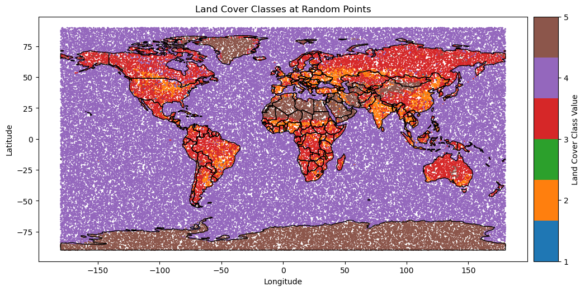
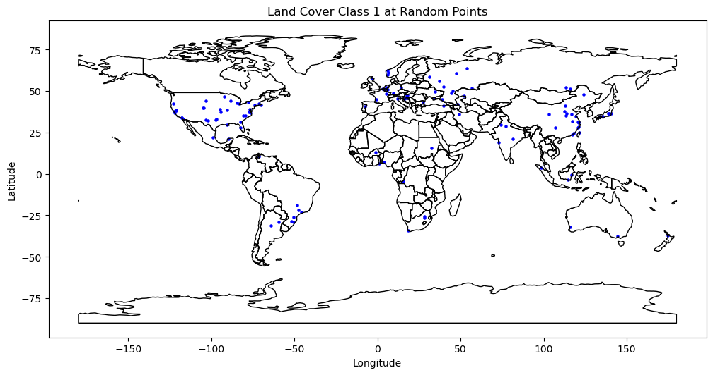
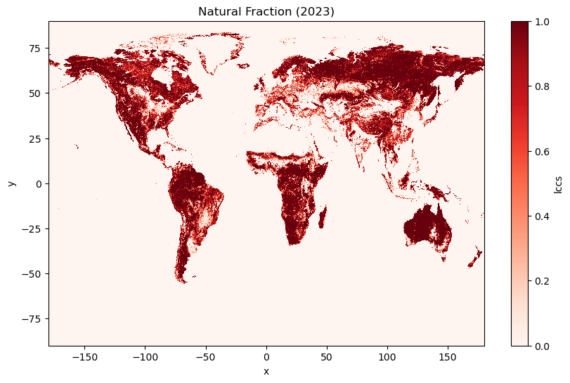
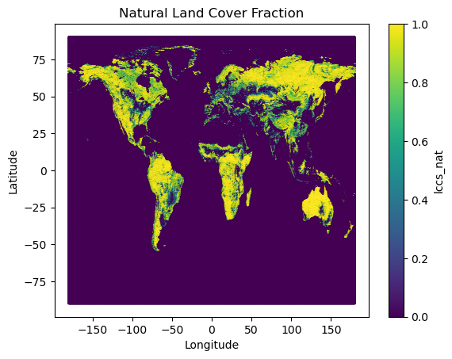
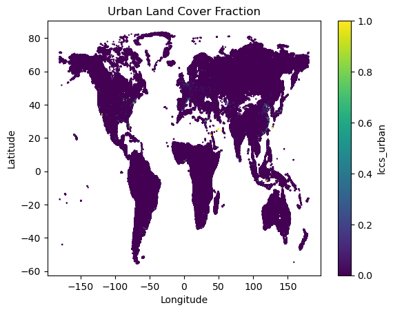
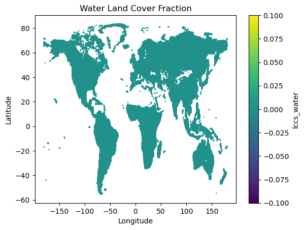
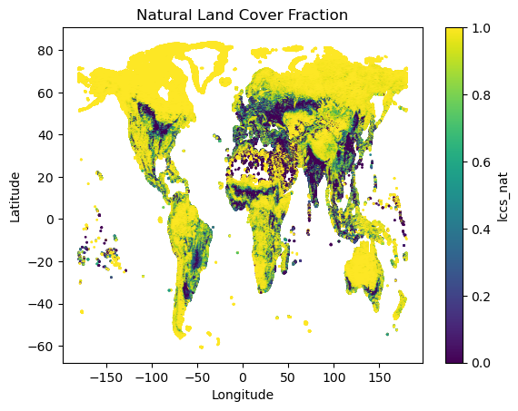

Urban Landcover Data
Urban Landcover Data#
Landcover Data
import zarr
store = zarr.open("/net/data/arceme/lcover_data/ESACCI_2016_2023.zarr", mode="r")
print(store.tree())
/
├── band (8,) int64
├── band_data (8, 64800, 129600) float32
├── x (129600,) float64
└── y (64800,) float64
import xarray as xr
ds = xr.open_zarr("/net/data/arceme/lcover_data/ESACCI_2016_2023.zarr")
print(ds)
print(ds.data_vars)
print(ds.coords)
print(ds.attrs)
<xarray.Dataset>
Dimensions: (band: 8, y: 64800, x: 129600)
Coordinates:
* band (band) int64 2016 2017 2018 2019 2020 2021 2022 2023
* x (x) float64 -180.0 -180.0 -180.0 -180.0 ... 180.0 180.0 180.0
* y (y) float64 90.0 90.0 89.99 89.99 ... -89.99 -89.99 -90.0 -90.0
Data variables:
band_data (band, y, x) float32 dask.array<chunksize=(1, 6000, 4000), meta=np.ndarray>
Data variables:
band_data (band, y, x) float32 dask.array<chunksize=(1, 6000, 4000), meta=np.ndarray>
Coordinates:
* band (band) int64 2016 2017 2018 2019 2020 2021 2022 2023
* x (x) float64 -180.0 -180.0 -180.0 -180.0 ... 180.0 180.0 180.0 180.0
* y (y) float64 90.0 90.0 89.99 89.99 ... -89.99 -89.99 -90.0 -90.0
{}
import xarray as xr
lc = xr.open_zarr("/net/data/arceme/lcover_data/ESACCI_2016_2023.zarr")
lc = lc.rename({'band_data': 'lccs'}) # friendlier name
lc2020 = lc.lccs.sel(band=2020)
print(lc2020)
<xarray.DataArray 'lccs' (y: 64800, x: 129600)>
dask.array<getitem, shape=(64800, 129600), dtype=float32, chunksize=(6000, 4000), chunktype=numpy.ndarray>
Coordinates:
band int64 2020
* x (x) float64 -180.0 -180.0 -180.0 -180.0 ... 180.0 180.0 180.0 180.0
* y (y) float64 90.0 90.0 89.99 89.99 ... -89.99 -89.99 -90.0 -90.0
import rioxarray
lc2020 = lc2020.rio.write_crs("EPSG:4326")
import matplotlib.pyplot as plt
import geopandas as gpd
from mpl_toolkits.axes_grid1 import make_axes_locatable
from matplotlib.colors import ListedColormap
# Define a discrete colormap
categories = np.unique(df['Value'])
cmap = ListedColormap(plt.cm.tab10.colors[:len(categories)])
world = gpd.read_file(gpd.datasets.get_path('naturalearth_lowres'))
fig, ax = plt.subplots(figsize=(12, 6))
world.boundary.plot(ax=ax, linewidth=1, edgecolor='black')
# Plot the data
sc = ax.scatter(df['Longitude'], df['Latitude'], c=df['Value'], cmap=cmap, s=1, alpha=1)
ax.set_title('Land Cover Classes at Random Points')
ax.set_xlabel('Longitude')
ax.set_ylabel('Latitude')
# Create colorbar
divider = make_axes_locatable(ax)
cax = divider.append_axes("right", size="5%", pad=0.1)
cbar = plt.colorbar(sc, cax=cax, ticks=categories)
cbar.set_label('Land Cover Class Value')
cbar.ax.set_yticklabels(categories.astype(int)) # Ensure labels are integers
plt.show()

# Filter the DataFrame for Value == 1
df_filtered = df[df['Value'] == 1]
# Plot the filtered data
fig, ax = plt.subplots(figsize=(12, 6))
world.boundary.plot(ax=ax, linewidth=1, edgecolor='black')
sc = ax.scatter(df_filtered['Longitude'], df_filtered['Latitude'], c='blue', s=5, alpha=1)
ax.set_title('Land Cover Class 1 at Random Points')
ax.set_xlabel('Longitude')
ax.set_ylabel('Latitude')
plt.show()

import numpy as np
import pandas as pd
# Example: somewhere in central London
# Generate random sample for 1000 points
np.random.seed(42) # for reproducibility
example_lon = np.random.uniform(-180, 180, 100000)
example_lat = np.random.uniform(-90, 90, 100000)
# Select nearest pixel for all random points
vals = lc2020.sel(
x=xr.DataArray(example_lon, dims="points"),
y=xr.DataArray(example_lat, dims="points"),
method='nearest'
).compute().values
# Create a DataFrame with the values and corresponding coordinates
df =c pd.DataFrame({
'Longitude': example_lon,
'Latitude': example_lat,
'Value': vals
})
print(df.head())
# Print summary statistics
print("Summary statistics of selected values:")
print(f"Min: {vals.min()}")
print(f"Max: {vals.max()}")
print(f"Mean: {vals.mean()}")
print(f"Std Dev: {vals.std()}")
print(f"Unique values: {np.unique(vals)}")
Longitude Latitude Value
0 -45.165557 14.540228 4.0
1 162.257150 4.854897 4.0
2 83.517819 -26.813349 4.0
3 35.517054 -1.221722 2.0
4 -123.833289 -24.282606 4.0
Summary statistics of selected values:
Min: nan
Max: nan
Mean: nan
Std Dev: nan
Unique values: [ 1. 2. 3. 4. 5. nan]
import pandas as pd
import geopandas as gpd
import xarray as xr
from shapely.geometry import Point
# -------------------------------
# 1. Config
# -------------------------------
csv_file = "/net/scratch/swolf/GBIF/GBIF_try6_GloNAF_WCVP_status_woodiness_CS.csv"
zarr_file = "/net/data/arceme/lcover_data/ESACCI_2016_2023.zarr"
year = 2023
chunk_size = 1_000_000
# -------------------------------
# 2. Open Zarr
# -------------------------------
lc = xr.open_zarr(zarr_file)
lc = lc.rename({'band_data': 'lccs'})
lc_year = lc.lccs.sel(band=year)
# -------------------------------
# 3. Read CSV in chunks and extract values
# -------------------------------
urban_flags = []
for chunk in pd.read_csv(csv_file,
usecols=["gbifID", "decimalLatitude", "decimalLongitude"],
chunksize=chunk_size):
# Convert to GeoDataFrame
gdf = gpd.GeoDataFrame(
chunk,
geometry=[Point(xy) for xy in zip(chunk.decimalLongitude, chunk.decimalLatitude)],
crs="EPSG:4326"
)
# Raster lookup
lc_vals = lc_year.sel(
x=xr.DataArray(gdf.geometry.x, dims="points"),
y=xr.DataArray(gdf.geometry.y, dims="points"),
method="nearest"
).compute().values
# Save raw values directly
gdf['landcover_value'] = lc_vals
# Append only columns we want
urban_flags.append(gdf[['gbifID', 'landcover_value']])
# -------------------------------
# 4. Combine everything
# -------------------------------
result = pd.concat(urban_flags, ignore_index=True)
print(result.head())
# Save
result.to_csv("/net/scratch/swolf/GBIF_landcover_values_2023.csv", index=False)
gbifID landcover_value
0 891018389 3.0
1 891018395 2.0
2 891018399 3.0
3 891018400 3.0
4 891018401 3.0
import xarray as xr
import numpy as np
import pandas as pd
import h3
lc_year = lc.lccs.sel(band=2023)
lc_masked = lc_year.where(~lc_year.isin([4]))
urban = (lc_year == 1).coarsen(x=20, y=20).mean()
crop = (lc_year == 2).coarsen(x=20, y=20).mean()
nat = (lc_year == 3).coarsen(x=20, y=20).mean()
water = (lc_year == 4).coarsen(x=20, y=20).mean()
barren = (lc_year == 5).coarsen(x=20, y=20).mean()
urban
<xarray.DataArray 'lccs' (y: 3240, x: 6480)>
dask.array<mean_agg-aggregate, shape=(3240, 6480), dtype=float64, chunksize=(300, 200), chunktype=numpy.ndarray>
Coordinates:
band int64 2023
* x (x) float64 -180.0 -179.9 -179.9 -179.8 ... 179.8 179.9 179.9 180.0
* y (y) float64 89.97 89.92 89.86 89.81 ... -89.81 -89.86 -89.92 -89.97import matplotlib.pyplot as plt
nat.plot(cmap="Reds", vmin=0, vmax=1, figsize=(10,6))
plt.title("Natural Fraction (2023)")
plt.show()

# convert urban, corp and nat to dataframe
df_urban = urban.to_dataframe().reset_index()
df_crop = crop.to_dataframe().reset_index()
df_nat = nat.to_dataframe().reset_index()
df_water = water.to_dataframe().reset_index()
df_barren = barren.to_dataframe().reset_index()
df_nat.head()
| y | x | band | lccs | |
|---|---|---|---|---|
| 0 | 89.972222 | -179.972222 | 2023 | 0.0 |
| 1 | 89.972222 | -179.916667 | 2023 | 0.0 |
| 2 | 89.972222 | -179.861111 | 2023 | 0.0 |
| 3 | 89.972222 | -179.805556 | 2023 | 0.0 |
| 4 | 89.972222 | -179.750000 | 2023 | 0.0 |
# Merge all three dataframes on x and y coordinates
df_merged = df_urban.merge(df_crop, on=['x', 'y', 'band'], suffixes=('_urban', '_crop'))
df_merged = df_merged.merge(df_nat, on=['x', 'y', 'band'])
df_merged = df_merged.rename(columns={'lccs': 'lccs_nat'})
df_merged = df_merged.merge(df_barren, on=['x', 'y', 'band'])
df_merged = df_merged.rename(columns={'lccs': 'lccs_barren'})
df_merged = df_merged.merge(df_water, on=['x', 'y', 'band'])
df_merged = df_merged.rename(columns={'lccs': 'lccs_water'})
print(df_merged.head())
y x band lccs_urban lccs_crop lccs_nat lccs_barren \
0 89.972222 -179.972222 2023 0.0 0.0 0.0 0.0
1 89.972222 -179.916667 2023 0.0 0.0 0.0 0.0
2 89.972222 -179.861111 2023 0.0 0.0 0.0 0.0
3 89.972222 -179.805556 2023 0.0 0.0 0.0 0.0
4 89.972222 -179.750000 2023 0.0 0.0 0.0 0.0
lccs_water
0 1.0
1 1.0
2 1.0
3 1.0
4 1.0
# dimenstions of the merged dataframe
print(df_merged.shape)
(20995200, 8)
df_merged.head()
| y | x | band | lccs_urban | lccs_crop | lccs_nat | lccs_barren | lccs_water | |
|---|---|---|---|---|---|---|---|---|
| 0 | 89.972222 | -179.972222 | 2023 | 0.0 | 0.0 | 0.0 | 0.0 | 1.0 |
| 1 | 89.972222 | -179.916667 | 2023 | 0.0 | 0.0 | 0.0 | 0.0 | 1.0 |
| 2 | 89.972222 | -179.861111 | 2023 | 0.0 | 0.0 | 0.0 | 0.0 | 1.0 |
| 3 | 89.972222 | -179.805556 | 2023 | 0.0 | 0.0 | 0.0 | 0.0 | 1.0 |
| 4 | 89.972222 | -179.750000 | 2023 | 0.0 | 0.0 | 0.0 | 0.0 | 1.0 |
# filter out rows where all three land cover fractions are zero
#df_merged = df_merged[~((df_merged['lccs_urban'] == 0.0) & (df_merged['lccs_crop'] == 0.0) & (df_merged['lccs_nat'] == 0.0)) & (df_merged['lccs_barren'] == 0.0) & (df_merged['lccs_water'] == 0.0) ]
# dimenstions of the merged dataframe
#print(df_merged.shape)
(2677173, 8)
df_merged.head()
| y | x | band | lccs_urban | lccs_crop | lccs_nat | lccs_barren | lccs_water | |
|---|---|---|---|---|---|---|---|---|
| 754325 | 83.527778 | -33.027778 | 2023 | 0.0 | 0.0 | 1.0 | 0.0 | 0.0 |
| 754326 | 83.527778 | -32.972222 | 2023 | 0.0 | 0.0 | 1.0 | 0.0 | 0.0 |
| 754327 | 83.527778 | -32.916667 | 2023 | 0.0 | 0.0 | 1.0 | 0.0 | 0.0 |
| 754332 | 83.527778 | -32.638889 | 2023 | 0.0 | 0.0 | 1.0 | 0.0 | 0.0 |
| 754333 | 83.527778 | -32.583333 | 2023 | 0.0 | 0.0 | 1.0 | 0.0 | 0.0 |
# recalculate the fractions to ensure they sum to 1
df_merged['total'] = df_merged['lccs_urban'] + df_merged['lccs_crop'] + df_merged['lccs_nat'] + df_merged['lccs_barren'] + df_merged['lccs_water']
df_merged['lccs_urban'] = df_merged['lccs_urban'] / df_merged['total']
df_merged['lccs_crop'] = df_merged['lccs_crop'] / df_merged['total']
df_merged['lccs_nat'] = df_merged['lccs_nat'] / df_merged['total']
df_merged['lccs_barren'] = df_merged['lccs_barren'] / df_merged['total']
df_merged['lccs_water'] = df_merged['lccs_water'] / df_merged['total']
df_merged.tail()
| y | x | band | lccs_urban | lccs_crop | lccs_nat | lccs_barren | lccs_water | total | |
|---|---|---|---|---|---|---|---|---|---|
| 20995195 | -89.972222 | 179.750000 | 2023 | 0.0 | 0.0 | 0.0 | 1.0 | 0.0 | 0.9500 |
| 20995196 | -89.972222 | 179.805556 | 2023 | 0.0 | 0.0 | 0.0 | 1.0 | 0.0 | 0.9500 |
| 20995197 | -89.972222 | 179.861111 | 2023 | 0.0 | 0.0 | 0.0 | 1.0 | 0.0 | 0.9500 |
| 20995198 | -89.972222 | 179.916667 | 2023 | 0.0 | 0.0 | 0.0 | 1.0 | 0.0 | 0.9500 |
| 20995199 | -89.972222 | 179.972222 | 2023 | 0.0 | 0.0 | 0.0 | 1.0 | 0.0 | 0.9025 |
# save to csv
df_merged.to_csv("/net/scratch/swolf/landcover_fractions_2023_all.csv", index=False)
import matplotlib.pyplot as plt
# plot df_merged
plt.figure(figsize=(10, 6))
df_merged.plot(x='x', y='y', kind='scatter', c='lccs_nat', cmap='viridis', s=0.5, alpha=1)
plt.title('Natural Land Cover Fraction')
plt.xlabel('Longitude')
plt.ylabel('Latitude')
plt.show()
<Figure size 1000x600 with 0 Axes>

import matplotlib.pyplot as plt
# plot df_urban
plt.figure(figsize=(10, 6))
df_merged.plot(x='x', y='y', kind='scatter', c='lccs_urban', cmap='viridis', s=0.5, alpha=1)
plt.title('Urban Land Cover Fraction')
plt.xlabel('Longitude')
plt.ylabel('Latitude')
plt.show()
<Figure size 1000x600 with 0 Axes>

import matplotlib.pyplot as plt
# plot df_merged
plt.figure(figsize=(10, 6))
df_merged.plot(x='x', y='y', kind='scatter', c='lccs_water', cmap='viridis', s=0.5, alpha=1)
plt.title('Water Land Cover Fraction')
plt.xlabel('Longitude')
plt.ylabel('Latitude')
plt.show()
<Figure size 1000x600 with 0 Axes>

import matplotlib.pyplot as plt
# plot df_merged
plt.figure(figsize=(10, 6))
df_merged.plot(x='x', y='y', kind='scatter', c='lccs_water', cmap='viridis', s=0.5, alpha=1)
plt.title('Water Land Cover Fraction')
plt.xlabel('Longitude')
plt.ylabel('Latitude')
plt.show()
import matplotlib.pyplot as plt
# plot df_urban
plt.figure(figsize=(10, 6))
df_merged.plot(x='x', y='y', kind='scatter', c='lccs_nat', cmap='viridis', s=1, alpha=1)
plt.title('Natural Land Cover Fraction')
plt.xlabel('Longitude')
plt.ylabel('Latitude')
plt.show()
<Figure size 1000x600 with 0 Axes>

import h3
df["h3"] = [
h3.latlng_to_cell(lat, lon, 3)
for lat, lon in zip(df["y"].to_numpy(), df["x"].to_numpy())
]
---------------------------------------------------------------------------
AttributeError Traceback (most recent call last)
Cell In[36], line 3
1 import h3
----> 3 df["h3"] = [
4 h3.latlng_to_cell(lat, lon, 3)
5 for lat, lon in zip(df["y"].to_numpy(), df["x"].to_numpy())
6 ]
Cell In[36], line 4, in <listcomp>(.0)
1 import h3
3 df["h3"] = [
----> 4 h3.latlng_to_cell(lat, lon, 3)
5 for lat, lon in zip(df["y"].to_numpy(), df["x"].to_numpy())
6 ]
AttributeError: module 'h3' has no attribute 'latlng_to_cell'